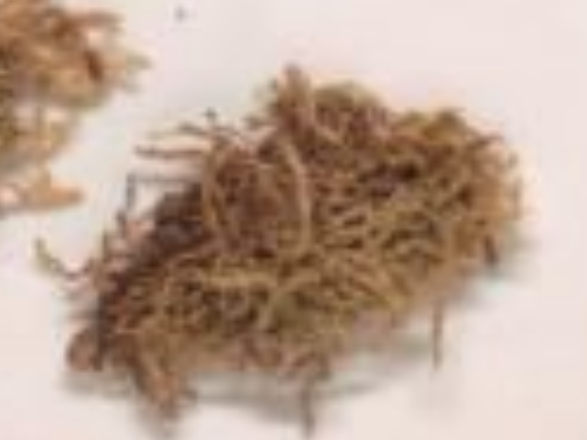

Trichotemnomataceae
Trichotemnoma Family
Trichotemnomataceae is a monotypic family of leafy liverworts, containing only Trichotemnoma corrugatum, endemic to Tasmania and New Zealand. These small, often reddish plants are distinguished by their transversely inserted, asymmetrically bilobed leaves, complete absence of underleaves, and a distinctive 5-plicate perianth. They typically inhabit alpine or subalpine environments.
Overview
The Trichotemnomataceae family comprises a single, unique species, Trichotemnoma corrugatum, found only in the alpine and subalpine regions of Tasmania and New Zealand. This endemism highlights the unique bryoflora of the Australasian region. These small liverworts typically form loose, creeping patches or grow among other bryophytes on damp soil, humus over rock, or occasionally on logs, usually in sheltered, moist sites within heathland, grassland, or fellfield environments at higher elevations.
Morphologically, Trichotemnomataceae is characterized by its transversely inserted leaves that are distinctly asymmetrically bilobed – the ventral lobe is significantly larger than the smaller, often tooth-like dorsal lobe. Underleaves are entirely absent. The plants often exhibit reddish-brown or purplish pigmentation. When fertile, they produce a large, distinctive perianth that is strongly 5-pleated (5-plicate) and narrows abruptly to a beaked mouth.
Phylogenetically, Trichotemnomataceae is placed within the Jungermanniales, suborder Jungermanniineae, representing an isolated lineage with a unique combination of characters. Its study contributes to understanding liverwort evolution, endemic patterns in the Southern Hemisphere, and adaptations to alpine environments.
Quick Facts
- Scientific Name: Trichotemnomataceae
- Common Name: Trichotemnoma Family
- Number of Genera: 1 (Trichotemnoma)
- Number of Species: 1 (Trichotemnoma corrugatum)
- Distribution: Endemic to Tasmania and New Zealand (alpine/subalpine)
- Evolutionary Group: Liverworts (Marchantiophyta) - Jungermanniopsida - Jungermanniineae
- Key Feature: Asymmetrically bilobed transverse leaves, no underleaves, 5-plicate perianth.
- Habitat Specificity: Alpine/subalpine soil, humus, rock crevices.
Key Characteristics
Gametophyte Form and Habit
Plants are small, forming loose prostrate to ascending patches or creeping among other vegetation. Color is typically reddish-brown, purplish-brown, or olive-green, rarely pure green. Stems are relatively slender, with branching usually sparse and intercalary (originating laterally or ventrally).
Leaves and Underleaves
Leaves are inserted transversely on the stem and are typically contiguous to slightly overlapping. They are strongly concave and characteristically asymmetrically bilobed. The ventral lobe is much larger, ovate, often directed forwards, with an acute or rounded apex. The dorsal lobe is significantly smaller, often appearing as a mere tooth or small triangular flap near the dorsal base of the ventral lobe. Underleaves are completely absent.
Rhizoids
Rhizoids are numerous, colorless or brownish, scattered along the ventral side of the stem.
Cellular Structure
Leaf cells are small to medium-sized, typically isodiametric (polygonal). Cell walls are usually moderately to strongly thickened, with distinct, often bulging or nodulose trigones. Oil bodies are present, typically small, granular, and several per cell.
Asexual Reproduction
Asexual reproduction via gemmae is absent.
Reproductive Structures
Plants are dioicous.
- Antheridia are borne in the axils of saccate bracts, forming intercalary spikes.
- Archegonia are terminal on leading shoots, surrounded by several pairs of bracts that are larger and often more deeply lobed than vegetative leaves.
- A large, prominent perianth is present, emergent to long-exserted. It is distinctive: ovoid to pyriform (pear-shaped), inflated, strongly and sharply 5-plicate (having 5 longitudinal folds or keels) in the upper part, and abruptly contracted to a small, tubular, often hyaline (clear) beak or mouth. Marsupia are absent.
Sporophytes and Spores
The sporophyte develops within the perianth. The seta is relatively long. The capsule is ovoid, dark brown, with a wall composed of two layers of cells. Dehiscence occurs via four valves.
Field Identification
Identifying Trichotemnomataceae requires finding small, often reddish liverworts in Tasmanian or New Zealand alpine/subalpine habitats and carefully observing the unique leaf shape and lack of underleaves. Fertile material with the distinctive perianth is confirmatory.
Primary Identification Features
- Leaves: Transverse insertion; asymmetrically bilobed with a large ventral lobe and a much smaller dorsal lobe/tooth.
- Underleaves: Completely absent.
- Color: Often reddish-brown or purplish.
- Habitat: Alpine/subalpine soil, humus, or rock crevices in Tasmania or New Zealand.
- Perianth (if fertile): Large, inflated, strongly 5-plicate, with an abrupt apical beak.
Secondary Identification Features
- Habit: Small, creeping or ascending patches.
- Cells (Microscopic): Often thick-walled with distinct trigones.
- Gemmae: Absent.
Seasonal Identification Tips
Trichotemnomataceae gametophytes are perennial:
- Growing Season: Best observed during the warmer, snow-free months in alpine/subalpine zones when moisture is available.
- Reproduction: Perianths and sporophytes are most likely to be found during the main growing season.
Common Confusion Points
The asymmetric leaves and lack of underleaves are key, but confusion might arise with:
- Lophoziaceae (Anastrophyllum, etc.): Some species have asymmetric lobes and lack underleaves, but leaves are typically succubous (not transverse) and the dorsal lobe is usually not so reduced; perianth shape differs (typically 3-4 plicate, not strongly 5-plicate with beak).
- Scapaniaceae: Have complicate-bilobed leaves (folded along a keel), not simply asymmetrically bilobed. Perianth is flattened.
- Cephaloziellaceae: Much smaller, usually with equally bilobed leaves (though sometimes slightly asymmetric).
- Gymnomitriaceae: Leaves typically appressed and symmetrically bilobed/emarginate; reproductive structures different.
Field Guide Quick Reference
Look For:
- Small plants, often reddish/brownish
- Leaves transverse, asymmetrically bilobed (large ventral, small dorsal lobe)
- Underleaves absent
- Alpine/subalpine habitat (Tas/NZ)
- 5-plicate, beaked perianth (if fertile)
- Gemmae absent
Key Distinctions:
- Asymmetric bilobed leaves + Absent underleaves + Transverse insertion
- Leaves not complicate-bilobed (vs. Scapaniaceae)
- Underleaves absent (vs. Geocalycaceae, Myliaceae, etc.)
- Leaves not equally bilobed (vs. Cephaloziellaceae)
- Distinctive 5-plicate perianth
Notable Examples
The family is monotypic, containing only the genus Trichotemnoma:

Trichotemnoma corrugatum
(No common name)
The sole species in the family, endemic to alpine and subalpine regions of Tasmania and New Zealand. It exhibits all the defining characteristics: small size, often reddish-brown color, transversely inserted and asymmetrically bilobed leaves, absence of underleaves, and the distinctive 5-plicate, beaked perianth.
Phylogeny and Classification
Trichotemnomataceae is classified within the liverwort division Marchantiophyta, class Jungermanniopsida, and order Jungermanniales. Based on molecular and morphological data, it is placed within the suborder Jungermanniineae. However, it represents a relatively isolated lineage within this suborder, not showing extremely close relationships to the larger families like Lophoziaceae or Jungermanniaceae.
Its unique combination of features – transverse, asymmetrically bilobed leaves, lack of underleaves, specific perianth morphology, and restricted Australasian alpine distribution – clearly defines it as a distinct family-level entity. Its evolutionary history is likely tied to the specific geological and climatic history of the Tasmanian and New Zealand alpine regions.
Position in Plant Phylogeny
- Kingdom: Plantae
- Clade: Embryophytes (Land Plants)
- Division: Marchantiophyta (Liverworts)
- Class: Jungermanniopsida
- Order: Jungermanniales
- Suborder: Jungermanniineae
- Family: Trichotemnomataceae
Evolutionary Significance
Trichotemnomataceae is significant for:
- Endemism: Represents a unique evolutionary lineage restricted to the alpine/subalpine zones of Tasmania and New Zealand, highlighting the region's unique biodiversity.
- Unique Morphology: The combination of transverse insertion, asymmetric leaf lobing, lack of underleaves, and 5-plicate perianth is distinctive.
- Phylogenetic Isolation: Contributes to understanding the diversity and evolutionary relationships within the Jungermanniineae suborder.
- Adaptation to Alpine Environments: Provides a case study of liverwort adaptation to high-altitude conditions in the Southern Hemisphere.